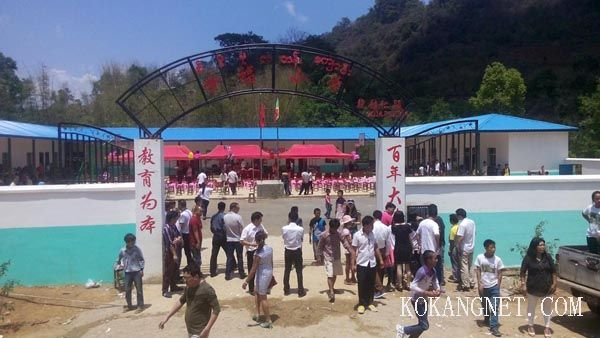

缅甸果敢掠影
果敢是缅甸掸邦第一特区，果敢族即是汉族，生活在缅甸掸邦北部，毗邻中国云南。300多年前迁移至此，世代居住于果敢地区。1897年2月4日签订的《中英条约》，清廷把果敢割让给英属缅甸，果敢人于是从云南人变成缅甸的一个少数民族。现今的果敢县位于缅甸掸邦东北部，面积约1万多平方公里，人口约15万。
300多年前明朝灭亡之际，明朝的一些官员和百姓追随永历皇帝朱由榔（桂王）从广西贵州和云南一路逃亡最后流落缅甸。通过300多年艰苦而漫长的日子，这些流落他乡的人员最终发展成了今天缅甸的果敢族（汉族）和这一区域被叫做其他称谓的汉民族。
2009年果敢战争，是2009年8月在缅甸果敢发生的一场战争，交战一方为缅甸民族民主同盟军，另一方为缅甸联邦政府。自8月8日开始的军事对峙而引发难民潮，始称八八事件。两周后战争爆发,目前战争仍然在持续。
| 果敢学校 | |
|  | |
 | |
 | |
| 果敢女孩 | |
 | |
| 捐款 | |
| 果敢街道 | |
 | |